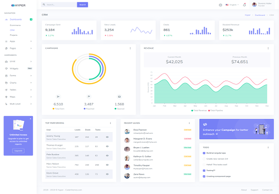
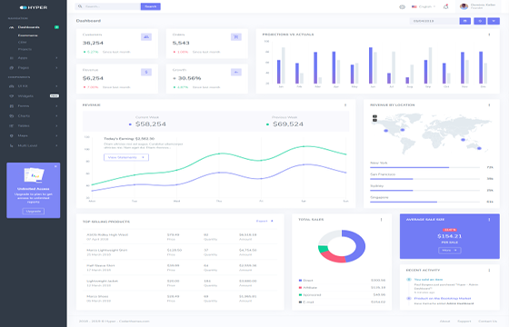

1. How to change the layout?
Hyper comes with different layout choices including vertical, horizontal, detached side menu, etc. Layouts help you to customize the view of the application. In order to switch to these layouts we have added javascript apis. These apis enables you to switch to any layout with just one line of code.
We have exposed the javascript api on our main app module named "$.App". You can access any method of the same by simply calling $.App.methodname. For each layout and other left sidebar related variations, the different api methods are described below:
Default -Vertical Layout
In order to switch to default layout (vertical layout): $.App.activateVerticalLayout();
Horizontal Layout
In order to switch to horizontal layout: $.App.activateHorizontalLayout();

Detached Sidebar Layout
In order to switch to detached sidebar layout: $.App.activateDetachedlLayout();
2. How to enable boxed mode?
You can enabled the boxed width mode for Vertical layout and and Horizontal layout. Just call api $.App.activateBoxed()in your js code.
Boxed Vertical Layout
$.App.activateBoxed()

Boxed Horizontal Layout
$.App.activateHorizontalLayout(); and $.App.activateBoxed()
/src/core/hyper.js as a constant called DEFAULT_CONFIG under component LayoutTheme. If you would like to change any of the default config, you can simply make change there.Left Sidebar
Sidebar Style (Themes)
The left side bar (mainly available in Vertical and Detached layouts) can be changed very easily as well. There are three possible choices of styles:
- Default - the default side bar with purple background
- Light - the sidebar with light background
- Dark - the sidebar with dark background
Default - Purple
In order to switch to default:
$.App.activateDefaultSidebarTheme();Light Sidebar (Left)
In order to switch to light:
$.App.activateLightSidebarTheme();Dark Sidebar (Left)
In order to switch to dark:
$.App.activateDarkSidebarTheme();How to enable Condensed (Flipped or Mini) Sidebar?
It's very easy to have condensed (or you can say mini or flipped) sidebar nav. Just add an attribute called
data-leftbar-compact-mode="condensed"onbodyelement and the sidebar would turn into mini magically. Alternatively you can also call$.App.activateCondensedSidebar()How to enable Scrollable Sidebar?
It's very easy to have scrollable sidebar nav. Just add an attribute called
data-leftbar-compact-mode="scrollable"onbodyelement and the sidebar would become scrollable with the content. Alternatively you can also call$.App.activateScrollableSidebar()How to change default width?
In order to change the width of left side navigation bar, open a file
src/scss/config/default/_custom-variables.scssand change the value of variable$leftbar-width. The default value is set to250px.How to change background or menu text color other than provided?
In order to change the background color, open a file
src/scss/config/default/_custom-variables.scssand change the value of variable$bg-leftbar. The default value is set tolinear-gradient(135deg, #8f75da 0%, #727cf5 60%).When you change the background color, you might want to change the color of menu accordingly. To change the color of menu item, change the variable
$menu-item(Default is set to#cedce4). Similarly, change the value of variables$menu-item-hoverand$menu-item-active.You can change other styles by making modifications in
src/scss/custom/structure/_left-menu.scss.How to add new menu items/change menu items?
In order to add, change or remove menu items from left side navigation, simply edit in file
src/html/partials/left-sidebar.html. The change would reflect in all the html files automatically.How to change content of helpbox?
We are having a helpbox present at the bottom of left sidebar. This allows you to show important notifications including product updates, subscription expiry, upgrade offers, etc. You can easily change the content of this box. In order to do so open up file
src/html/partials/left-sidebar.htmland go to element having class.help-box. You can change the image as well other text here. In demo we have used a nice image from undraw.co.
Topbar
How to add/change/remove elements from topbar?
In order to add, change or remove any ui elements from top bar, simply edit in file
src/html/partials/topbar.html.How to change topbar height?
In order to change the height of topbar, open a file
src/scss/config/default/_custom-variables.scssand change the value of variable$topbar-height. The default value is set to70px.How to change background color?
In order to change the background color of topbar, open a file
src/scss/config/default/_custom-variables.scssand change the value of variable$bg-topbar. The default value is set toffffff.When you change the background color, you might want to change the text color accordingly. You can change color or other style by making modifications in
src/scss/custom/structure/_topbar.scss.
Horizontal Layout Menu bar
How to add/change/remove menu entry?
In order to add, change or remove menu items from left side navigation, simply edit in file
src/html/partials/horizontal-nav.html.html. The change would reflect in all the html files automatically.How to change background color?
In order to change the background color of topbar, open a file
src/scss/config/default/_custom-variables.scssand change the value of variable$bg-topnav. The default value is set tolinear-gradient(to bottom, #8f75da, #727cf5).When you change the background color, you might want to change the text color accordingly. You can change color or other style by making modifications in
src/scss/custom/structure/_horizontal-nav.scss.
Right Sidebar
How to open/close right sidebar?
In order to open/close (toggle), right sidebar, simply add class
right-bar-toggleon any clickable element, and when user clicks on that element, the righ sidebar would be opened or closed. Alternatively you call$.RightBar.toggleRightSideBar()as well.How to change right sidebar content?
In order to add, change or remove any ui elements from right sidebar, simply edit in file
src/html/partials/right-sidebar.html.How to change width?
In order to change the width of right sidebar, open a file
src/scss/config/default/_custom-variables.scssand change the value of variable$rightbar-width. The default value is set to260px.You can change other styles by making modifications in
src/scss/custom/structure/_right-sidebar.scss.
Footer
How to change content of footer?
In order to add, change or remove any ui elements from footer sidebar, simply edit in file
src/html/partials/footer.html. The change would reflect in all the files automatically.